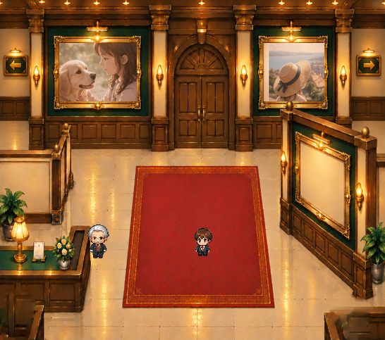

左右それぞれを操作して確認
写真2点と正式キャラクター原本を使用しています。植物以外の固定レイアウトは変えていません。
左右の鉢を最大5pxずつ中央へ移動
原本との位置関係・背景修復



植物を外した後ろの木製台座と床は、実際に隠れていた部分を周辺の原本素材から復元した画像です。原本と画素完全一致ではありません。切り替え時の下地も必ず確認してください。
90%・100%・110%の実合成


元画像では鉢の下端が画面外で切れているため、拡大縮小は画面下端基準です。上下移動は今回の品質保証範囲外です。